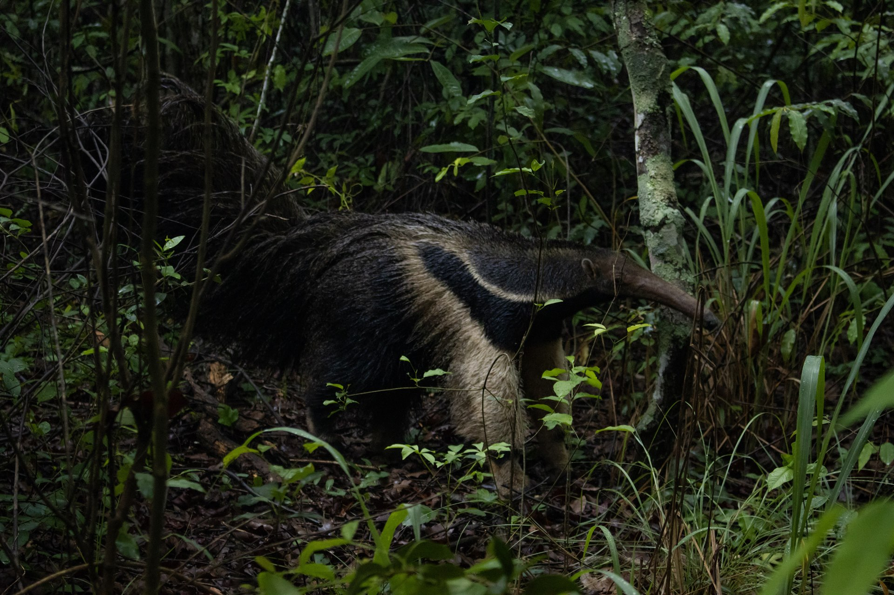

Micheli Mac Intir
Bióloga • Supervisora Ambiental • Pesquisadora • Data Science (USP)
Da lama e águas costeiras ao comando da supervisão ambiental em obras rodoviárias de grande porte (BR-153 e BR-369) e modelagem de dados na USP: unindo a paixão genuína pela vida silvestre com o rigor técnico e o pragmatismo que o setor de infraestrutura exige.

Ornitologia costeira com tripé e teleobjetiva em água rasa (Porto de São Sebastião/SP).
Bióloga por vocação, gestora por atitude, cientista por inquietude

Expedição Ilhabela Inspeção de Campo
Inspeção de Campo
"Não acredito em biologia de gabinete. Conservação de verdade se faz entendendo o chão da obra, o comportamento dos animais e o coração das pessoas envolvidas."
Sou Micheli Mac Intir, bióloga licenciada pelo UNIFATEA (com bolsa CAPES), supervisora ambiental e atualmente pós-graduanda em Data Science & Analytics pela USP/ESALQ.
Minha trajetória une o rigor técnico à capacidade de liderança e diálogo direto. Ao longo dos anos, atuei desde o resgate e reabilitação de fauna silvestre junto à Polícia Militar Ambiental no Vale do Paraíba, até o comando de operações de supervisão ambiental em obras rodoviárias de grande porte (BR-153 e BR-369) e frentes industriais de celulose (Arauco), portuárias (São Sebastião) e hidrelétricas (PCH Verde).
Com a missão de criar uma consultoria dinâmica, próxima e moderna, fundei a BioKuri — Pesquisa e Soluções Ambientais ao lado do biólogo e taxonomista Lucas Aøsf. Na BioKuri, combinamos taxonomia apurada, agilidade operacional e inteligência de dados para desatar nós ambientais com velocidade e conformidade inquestionável.
Gestão & Liderança Prática
Tratamento ágil de NCs, interface firme com órgãos e engenharia civil.
Data Science Aplicada
Indicadores estruturados em Python, visualização preditiva e métricas ESG.
Supervisão Ambiental de Obras Rodoviárias (BR-153 & BR-369)
Atuação direta na Caruso Soluções Ambientais & Tecnológicas nas frentes das rodovias federais BR-153 e BR-369 (Jacarezinho/PR).
Comando de Campo & Frota
Liderança direta de equipe multidisciplinar com 9 profissionais especializados e coordenação de frota com 5 viaturas operacionais, com planejamento diário, distribuição de frentes e alinhamento com a engenharia de obras.
Não Conformidades (NC)
Realização de inspeções ambientais sistemáticas para identificar, registrar e tratar inconformidades em sistema informatizado, garantindo plano de ação corretivo imediato até a baixa pelo órgão ambiental.
Licenças, Outorgas & Terceiros
Controle estrito de condicionantes (LP, LI, LO), outorgas de captação/lançamento de recursos hídricos e auditoria de terceiros: banheiros químicos, bota-fora autorizado e controle de poeira (umectação com pipa).
Fauna Silvestre & Germoplasma
Acompanhamento de supressão vegetal autorizada, coordenação de resgate e afugentamento de animais silvestres e coleta de sementes, epífitas e propágulos de flora nativa para mitigação de impactos.
Kuri — do tupi-guarani para a nobre Araucária (pinheiro-do-paraná). Raízes profundas, visão de longo alcance e respeito inegociável à vida silvestre.
Soluções Ambientais Inteligentes, Ágeis e Humanas
A BioKuri nasceu da sinergia entre o rigor taxonômico de museu e a urgência do mercado corporativo por consultorias que realmente entendam o cronograma rígido da engenharia, traduzindo as exigências de órgãos ambientais (IBAMA, IAT, CETESB, IMASUL) em conformidade técnica e documentada.
Como sócia-fundadora ao lado do biólogo e taxonomista Lucas Aøsf, lidero a gestão estratégica de contratos, coordenação de equipes de campo, diagnósticos de fauna e modelagem de indicadores ecológicos orientados a dados.
Sociedade & Visão Complementar
Taxonomia de Ponta • Execução Operacional"Na BioKuri, o conhecimento taxonômico e ecológico profundo encontra o pulso firme da supervisão de obras. Desatamos gargalos ambientais com embasamento inatacável."
Produção Científica & Projetos de Pesquisa
Artigos internacionais com dados de Ciência Cidadã, fomento industrial corporativo e presença climática global.
Update and Expansion of the Distribution of the Maldonado Redbelly Toad, Melanophryniscus moreirae Gallardo 1966, in Southeast Brazil, Using Citizen Science Data
Estudo inovador demonstrando a expansão da área de ocorrência do sapinho-flamenguinho de altitude (Melanophryniscus moreirae, anuro bioindicador de áreas montanhosas da Mata Atlântica) no Sudeste brasileiro através da integração de dados de ciência cidadã com validação morfológica e bioacústica em campo.

O Papel do Reflorestamento na Restauração Microclimática e Atração da Avifauna no Parque das Nascentes
Avaliação empírica demonstrando como o adensamento florestal com espécies nativas amenizou a temperatura superficial do solo e atuou como refúgio térmico, multiplicando a riqueza da avifauna na bacia do Paraíba do Sul.
Projeto Ornitofauna de Guaratinguetá
Levantamento sazonal sistemático e anilhamento de ornitofauna, mapeando gradientes de pressão antrópica e áreas prioritárias de restauração florestal em matriz agropecuária e industrial.
Herpetofauna da Serra da Bocaina
Expedições sistemáticas de campo na parte alta da Serra da Bocaina (São José do Barreiro/SP) para preencher lacunas de distribuição biogeográfica de anfíbios anuros e répteis de mata nebular.
Experiência Profissional em Destaque
Da linha de frente rodoviária aos maiores complexos industriais de celulose, portos e hidrelétricas do Brasil.
Supervisora Ambiental
Caruso Soluções Ambientais & Tecnológicas
Coordenação técnica e operacional integral da supervisão ambiental nas frentes das rodovias federais BR-153 e BR-369. Liderança diária de 9 profissionais, 5 viaturas operacionais, tratamento de Não Conformidades (NC), auditoria de terceiros, resgate de fauna e germoplasma e atendimento a notificações oficiais dos órgãos ambientais.
Sócia Co-Fundadora & Consultora Sênior
BioKuri — Pesquisa e Soluções Ambientais
Direção executiva e operacional da consultoria. Gestão de contratos, elaboração de programas ambientais (PBA), diagnósticos de fauna (EIA/RIMA, PCA, RCA), licenciamento estratégico e aplicação de Ciência de Dados a indicadores ecológicos corporativos.
Bióloga Consultora Especialista em Fauna
EcosBrasil • Elementus • Cayman • Engpacto
Execução de estudos de impacto, diagnósticos e monitoramento contínuo de fauna para grandes players do setor de celulose (megafábrica da Arauco em Inocência/MS e Cargill em Três Lagoas/MS), setor portuário (Porto de São Sebastião/SP, com ornitologia marinha em ilhas costeiras), hidrelétrico (PCH Verde em GO) e rodoviário (anel da BR-230/361 em Patos/PB).
Bióloga Pesquisadora & Educadora Ambiental
Instituto de Manejo da Biodiversidade (IMBio)
Pesquisa e manejo de fauna silvestre na Serra da Bocaina subsidiando a soltura e reintrodução de animais pela Polícia Militar Ambiental. Instrução especializada de prevenção de acidentes com animais peçonhentos e ofídios para o Estágio Básico do Combatente Aeromóvel (EBCA) do 5º Batalhão de Infantaria Leve (Exército Brasileiro). Apresentação científica na COP 30 (ONU 2025).
Competências Técnicas & Operacionais
Supervisão & Gestão de Obras
- Inspeções diárias em rodovias federais e canteiros industriais
- Gestão de Não Conformidades (NC) e planos corretivos
- Controle de licenças (LP, LI, LO), outorgas e condicionantes
- Auditoria de terceiros: banheiros químicos, bota-fora, poeira
- Elaboração de relatórios técnicos e respostas a ofícios oficiais
Fauna, Flora & Biodiversidade
- Ornitologia: levantamento e monitoramento costeiro/marinho
- Herpetofauna: transectos, busca ativa e diagnose morfológica
- Mastofauna terrestre e alada (quirópteros/morcegos)
- Resgate e afugentamento de fauna em supressão vegetal
- Resgate de germoplasma (sementes, orquídeas, bromélias)
Data Science & Análise Ecológica
- MBA Data Science & Analytics (USP / ESALQ em andamento)
- Análise estatística de dados ecológicos e riqueza de espécies
- Pipelines com Python e R aplicados a indicadores ambientais
- Visualização analítica e dashboards para auditorias ESG
- Mineração de bases abertas de biodiversidade (GBIF)
Liderança, Treinamentos & DDS
- Comando diário de equipes de 9 profissionais e frotas
- Condução de Diálogos Diários de Segurança e Meio Ambiente
- Treinamentos para tropas do Exército Brasileiro (5º BIL)
- Protocolo de zero acidentes com animais peçonhentos
- Mediação técnica com engenharia, terceiros e comunidade
Bastidores de Campo: Rigor Científico, Afeto e Bom Humor
A conservação se faz com bota na lama, água no peito, respeito à terra e amor autêntico pelos animais.
Monitoramento costeiro com câmera e tripé na água.
Amostragem em ilhas com caiaque oceânico.
Trilhas de fauna e amostragem em áreas remotas.
Artigo internacional aceito para publicação (2026).

Inspeção ambiental e amostragem de fauna em áreas remotas.
Formação Acadêmica & Idiomas
MBA em Data Science e Analytics
Universidade de São Paulo (USP / ESALQ)
Especialização focada em modelagem preditiva, algoritmos aplicados a ciências biológicas, visualização de dados e governança ESG.
Licenciatura em Ciências Biológicas
Centro Universitário Teresa D’Ávila (UNIFATEA)
Bolsista CAPES. TCC voltado a "Levantamento Ornitológico no Parque Ecológico do Taboão, Lorena/SP" sob orientação do prof. Ricardo Mendonça.
Comunicação Técnica & Científica
- Português: Nativo
- Inglês: Fluência para leitura crítica de artigos internacionais, redação técnica de papers e diálogo profissional.
Entre em Contato
Disponível para demandas de supervisão ambiental de obras, diagnósticos de fauna, soluções pela BioKuri e parcerias acadêmicas.